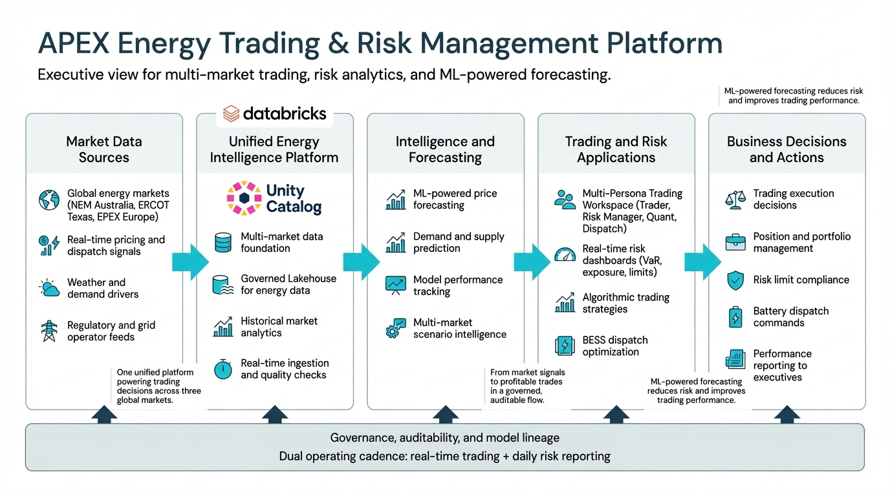
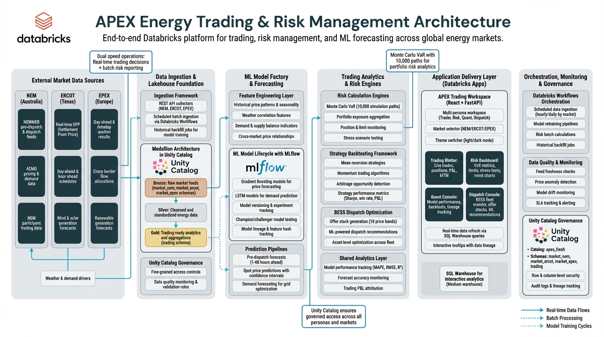

Enterprise-grade Databricks platform for multi-market energy trading, ML-powered forecasting, and real-time risk analytics
APEX is an enterprise demo Energy Trading and Risk Management platform built on Databricks, showcasing real-time trading capabilities, ML-powered price forecasting, and advanced risk analytics across three major global energy markets.
Global Energy Markets
Specialized Personas
Market Data Records
Trade across NEM Australia, ERCOT Texas, and EPEX Europe from a single unified interface with market-specific analytics and strategies.
Databricks AutoML delivers accurate price and demand predictions with automated model selection, hyperparameter tuning, MLflow tracking and lineage.
Monte Carlo VaR with 10,000 simulation paths provides portfolio risk assessment and stress testing.
ML-powered battery dispatch recommendations maximize revenue through intelligent offer stack generation.
Business-focused view emphasizing strategic value and decision flows across 5 key zones.

Technical architecture showing Databricks components and data flows.

APEX features a multi-persona workspace with four specialized consoles tailored to different user roles.
Key Metrics: Trade ID, Instrument, Direction, MW, Price, MTM P&L
Key Features: Monte Carlo VaR (10,000 paths), stress tests, limit monitoring
ML Models: Databricks AutoML with automated algorithm selection (XGBoost, LightGBM, Random Forest), MLflow tracking
Optimization: ML recommendations, confidence scores, target MW
See how each persona uses APEX throughout their typical workday to make data-driven decisions.
06:30 AM - Market Open Preparation
Sarah arrives at her desk and launches APEX. She switches to the NEM market view and immediately checks her Trading Blotter for overnight positions. The dashboard shows she's holding 150 MW exposure from yesterday's trades at an average price of $85/MWh. Current MTM P&L is showing +$2,340.
Databricks Value: SQL Warehouse provides sub-second query response times on the apex_fresh.trading.trades table with 50K+ historical records. Unity Catalog's row-level security ensures Sarah only sees trades she's authorized to view, while Delta Lake's ACID transactions guarantee data consistency even as new trades stream in from overnight automated systems.
08:00 AM - Pre-Dispatch Analysis
Looking at the 60-hour price forecast bar chart, Sarah notices a price spike predicted for 2 PM today (red bars indicating >75% of max price). She decides to execute a sell order to capitalize on the expected peak. Using the market selector, she quickly compares NEM pricing with ERCOT to identify arbitrage opportunities.
Databricks Value: The forecast Sarah views comes from an MLflow-registered LSTM model that ran automatically at 6 AM via Databricks Workflows. The scheduled job ingested fresh market data from AEMO's NEMWEB API, processed it through the medallion architecture (Bronze → Silver → Gold), and generated predictions—all without manual intervention. Model lineage tracked in MLflow shows exactly which training run produced these forecasts, ensuring full auditability for regulatory compliance.
02:00 PM - Active Trading
The price spike arrives as predicted. Sarah executes three sell orders totaling 200 MW at $142/MWh. The Trading Blotter updates in real-time, showing each trade with immediate MTM calculations. Her session P&L climbs to +$8,750. She hovers over the "MTM P&L" metric and the tooltip displays: "Source: apex_fresh.trading.trades | Calculation: (current_spot_price - trade_price) × volume_mw | Updated: Real-time via SQL Warehouse".
Databricks Value: Each trade Sarah executes is written to Delta Lake with ACID guarantees—no duplicate trades, no data loss. The FastAPI backend queries the SQL Warehouse in real-time to compute MTM valuations across her entire portfolio. Unity Catalog's audit logs capture every trade execution with timestamp, user identity, and IP address for compliance reporting. The data dictionary tooltips pull metadata from Unity Catalog's table/column comments, ensuring Sarah always knows the data source and calculation methodology.
04:30 PM - End of Day Review
Sarah reviews her trading blotter for the day: 12 total trades executed, net position reduced to 50 MW, final session P&L of +$9,120. She filters trades by instrument and sorts by profitability to identify which strategies worked best. The blotter shows complete lineage: which ML forecast informed each trade, what the predicted vs. actual price was, and the exact model version from MLflow.
Databricks Value: Databricks Workflows automatically run end-of-day reconciliation jobs at 5 PM, comparing Sarah's trade records against external settlement data, flagging any discrepancies for review. The serverless compute scales down after processing, minimizing costs. All trade data is retained in Delta Lake with time travel enabled, allowing Sarah to query historical states for regulatory audits going back months.
07:00 AM - Risk Assessment
Michael starts his day by reviewing the Risk Dashboard. He checks the four key risk metrics: Portfolio VaR 95% is at $45,230, VaR 99% at $67,890, Position Value at $428,000, and Limit Utilization at 73.2%. The VaR 99% 30-day trend chart shows risk has been increasing over the past week—data automatically aggregated from apex_fresh.trading.var_calculations table.
Databricks Value: A Databricks Workflow job runs every night at 2 AM to compute VaR across the entire portfolio using Monte Carlo simulation (10,000 paths). The job leverages serverless compute that auto-scales based on position volume—last night's run processed 2,500 positions across 3 markets in just 8 minutes. Results are written to Delta Lake tables with automatic versioning, allowing Michael to compare risk metrics across any historical date using time travel queries.
09:30 AM - Monte Carlo Simulation
Concerned about rising volatility, Michael adjusts the VaR parameters. He updates spot price to $96 and volatility to 0.15, then clicks "Refresh VaR" to run a new Monte Carlo simulation with 10,000 paths. The backend FastAPI service triggers an on-demand Databricks Job via the Jobs API. Within 45 seconds, results appear: VaR 99% has increased to $78,450, triggering an automated warning. He reviews the stress scenarios panel showing impact of various market shocks (±20% price movements, volatility spikes).
Databricks Value: The on-demand VaR calculation runs on ephemeral Databricks compute that spins up in seconds, executes the Python Monte Carlo simulation using NumPy/Pandas, and terminates automatically—Michael only pays for the 45 seconds of compute used. Unity Catalog governance ensures the calculation accesses only the positions Michael is authorized to see (column-level filtering on trader_id). The simulation code is versioned in MLflow, so every VaR calculation is reproducible and auditable.
11:00 AM - Limit Monitoring
The Limit Monitor table shows portfolio VaR approaching the $500,000 limit. Michael filters by trader scope using the dropdown to identify that two traders—Sarah and Alex—account for 60% of current risk exposure. Unity Catalog's row-level security ensures he can see aggregated risk but not individual trade details unless he has explicit permissions. He prepares a briefing for the trading desk about position reduction strategies.
Databricks Value: SQL Warehouse executes complex aggregation queries across apex_fresh.trading.positions with sub-second latency, joining position data with trader metadata from apex_fresh.trading.traders. Unity Catalog's attribute-based access control (ABAC) automatically filters results based on Michael's role—he sees risk aggregations but individual trader PII is masked unless explicitly granted. Delta Lake's liquid clustering on trader_id ensures queries are optimized even as the positions table grows to millions of rows.
03:00 PM - Daily Risk Report
Michael exports the VaR dashboard and stress scenarios for the daily risk committee report. He clicks on the model lineage link, which opens a view showing the complete data flow: NEMWEB API → Bronze ingestion (Workflow job: nemweb_predispatch_job) → Silver cleansing → LSTM model inference (MLflow run: lstm-nem-20260323-0600, R²=0.94) → VaR calculation (Python Monte Carlo). Every step is logged in Unity Catalog's lineage graph, with timestamps, data quality checks, and responsible job IDs.
Databricks Value: Unity Catalog's automated data lineage captures the entire flow from raw market data to VaR output without any manual instrumentation. Auditors can trace any VaR calculation back to source data, model versions, and transformation logic. MLflow integration shows which model training run generated the forecasts used in VaR—including hyperparameters, training data date ranges, and performance metrics. Databricks' Audit Logs track every query Michael ran, providing an immutable compliance trail for regulatory reporting (MiFID II, Dodd-Frank).
08:00 AM - Model Performance Review
Emily opens the Quant Console and immediately checks overnight model performance metrics stored in apex_fresh.trading.model_performance. The Gradient Boosting model for NEM shows MAPE of 3.2%, RMSE of 4.8, and R² of 0.94—excellent accuracy maintained since deployment. However, the ERCOT model's MAPE has drifted to 5.8% (up from 4.1% last week), indicating potential model degradation. The dashboard automatically flags this in red, pulling thresholds from Unity Catalog table properties.
Databricks Value: Model performance evaluation runs automatically every morning via a Databricks Workflow scheduled at 7 AM. The job queries predictions from apex_fresh.trading.model_predictions and compares them against actual market outcomes from apex_fresh.market_ercot.spp_realtime, computing MAPE/RMSE/R² metrics using PySpark. Delta Lake ensures atomic writes—even if the job fails mid-execution, the model_performance table remains consistent. MLflow integration auto-logs these metrics to the experiment tracking UI, creating a time-series view of model accuracy trends across all deployed models.
10:00 AM - Model Lineage Investigation
Emily clicks the "View Lineage" link next to the ERCOT model, which opens the MLflow UI showing the complete model lineage. She traces the model back to training run ID "lstm-ercot-20260320-0200" with feature hash "7f3a9b2c...". The training metadata shows it used data from Feb 20 - Mar 21, excluding the past two days when unusual weather patterns emerged (late-season cold front). She decides to retrain with extended historical data including similar weather events from 2024-2025.
Databricks Value: MLflow automatically captured every detail of the original training run: dataset version (Delta Lake table timestamp), hyperparameters (learning_rate=0.001, hidden_layers=[128,64]), training duration (47 minutes), conda environment specification, and even the Git commit hash of the training code. Emily can click "Re-run" to trigger a new Databricks Workflow job that fetches fresh training data from Delta Lake (with time travel to ensure reproducibility), trains a new LSTM variant, and registers it in MLflow Model Registry—all without writing any orchestration code.
01:00 PM - Strategy Backtesting
Emily reviews three trading strategies in the backtest results table (apex_fresh.trading.backtests): Mean Reversion (145 trades, 68% win rate, Sharpe 1.8, +$142K P&L), Momentum (89 trades, 71% win rate, Sharpe 2.1, +$98K), and Arbitrage (203 trades, 58% win rate, Sharpe 1.4, +$67K). The Momentum strategy is performing best. She drills down to view individual trades and notes that Momentum outperforms during high-volatility periods. She recommends increasing allocation to Momentum and reducing Mean Reversion exposure.
Databricks Value: The backtest simulations ran overnight as a Databricks Workflow job, processing 5 years of historical market data (3.2M price records from Delta Lake) across 3 strategies in parallel using Apache Spark distributed compute. The job completed in 22 minutes and cost $1.80 in compute—far cheaper and faster than running locally. Results are written to Delta Lake with partition pruning on strategy_name and trade_date, ensuring Emily's queries filter efficiently. Unity Catalog lineage shows exactly which historical price tables fed the backtest, critical for explaining results to the risk committee.
04:00 PM - Champion/Challenger Testing
Emily sets up a champion/challenger test comparing the current LSTM model (champion) against a new XGBoost variant (challenger). She creates two MLflow experiments—"ercot-production-champion" and "ercot-production-challenger"—and configures a Databricks Workflow to run both models every hour for the next 7 days, scoring predictions in parallel. The workflow will automatically compute comparative metrics (MAPE difference, prediction correlation) and alert her if the challenger outperforms by >10% for 3 consecutive days.
Databricks Value: MLflow's Model Registry provides native champion/challenger support—Emily tags the current model as "Champion" and the XGBoost model as "Challenger", both registered under the "ercot-price-forecast" model name. Databricks Workflows uses conditional job logic to route 80% of production traffic to Champion and 20% to Challenger, collecting performance metrics in real-time. Model Serving endpoints (if deployed) would enable seamless A/B testing via traffic splitting. Unity Catalog's governance ensures both models operate under the same data access policies, preventing inconsistencies. After 7 days, Emily can promote the winning model to production with a single API call, and Delta Lake's time travel lets her roll back instantly if issues arise.
05:30 AM - Fleet Status Check
James begins his early morning shift by reviewing the BESS Fleet Monitor. All 5 battery storage assets show "OPERATIONAL" status. He selects Asset BESS-NEM-001 and views the pre-dispatch price strip showing a clear peak opportunity at 2 PM (12-hour forecast visualization).
Databricks Value: A Databricks Workflow job named "BESS Fleet Monitor" runs every 15 minutes to aggregate telemetry from all 5 BESS assets. The job queries apex_fresh.trading.dispatch_assets to pull latest state-of-charge (SOC), operational status, and temperature metrics, writing results to a monitoring table. SQL Warehouse provides sub-second refresh for the Fleet Monitor UI, displaying 48-hour telemetry history with automatic liquid clustering on asset_id and timestamp for optimal query performance. The pre-dispatch price forecast James sees is generated by an LSTM model tracked in MLflow (model version bess-lstm-v2.3, registered on 2026-03-19) and refreshed hourly via scheduled job execution.
06:00 AM - Offer Stack Builder
James uses the 10-band offer stack builder to configure pricing for Asset BESS-NEM-001. He sets progressive pricing across bands: Band 1 at $85/MWh (10 MW), Band 2 at $95 (10 MW), continuing up to Band 10 at $180 (10 MW) for the peak discharge window.
Databricks Value: Every offer stack James builds is persisted to the apex_fresh.trading.offer_stacks Delta Lake table with automatic versioning. Delta Lake's time travel capability allows auditors to query historical offer stacks from any past date - for example, "SELECT * FROM offer_stacks VERSION AS OF 30 DAYS AGO WHERE asset_id='BESS-NEM-001'" retrieves all configurations submitted a month ago. Unity Catalog tracks fine-grained lineage showing which forecast model predictions influenced each band's pricing, and row-level security ensures James can only modify offer stacks for assets he's authorized to operate. The offer stack submission triggers a validation job that checks against market participation limits and battery cycle constraints before committing to the Delta table.
12:00 PM - ML Recommendations Review
The ML recommendations panel suggests "DISCHARGE" action for BESS-NEM-001 at 2 PM with target MW of 85 and confidence score of 0.87. James reviews the recommendation rationale - the AutoML price forecast shows strong peak probability, weather data confirms high demand, and historical stack performance indicates favorable conditions.
Databricks Value: The dispatch recommendation engine runs as a Databricks Workflow job triggered on-demand via Jobs API whenever James requests updated guidance. The job executes a PySpark pipeline that joins forecast prices (from MLflow-registered AutoML model), weather features (from apex_fresh.market_nem.weather_forecasts), current SOC levels (from real-time asset telemetry), and historical dispatch performance (from backtested strategy results in Delta Lake). The recommendation algorithm is itself an MLflow-tracked model (dispatch-optimizer-v1.2, champion model since 2026-03-10) with explainability features that generate the rationale text James sees. Unity Catalog's data lineage automatically traces the recommendation back through all source datasets, forecast models, and feature transformations - critical for regulatory compliance when dispatch decisions are audited.
02:15 PM - Dispatch Execution & Monitoring
James executes the discharge order following the ML recommendation. The asset successfully dispatches 85 MW during the price peak of $148/MWh. He monitors real-time performance and updates the offer stack for the evening charging window. Asset revenue for the day: $12,580, with asset SOC managed within optimal 20-80% range to preserve battery cycle life.
Databricks Value: When James clicks "Execute Dispatch," the action triggers a serverless Databricks job that validates the dispatch order against pre-configured safety limits, writes the execution record to apex_fresh.trading.dispatch_executions with ACID transaction guarantees from Delta Lake, and submits the bid to the NEM market API. Real-time monitoring leverages Databricks SQL Warehouse streaming queries that detect when settlement data arrives (within 5 minutes of dispatch interval), auto-calculating actual revenue by joining dispatch_executions with market settlement prices. Unity Catalog audit logs capture James' user ID, timestamp, and the complete dispatch decision (including ML recommendation accepted/rejected status) - satisfying AEMO (Australian Energy Market Operator) audit requirements. The evening offer stack update James performs is stored with Delta Lake versioning, allowing the team to analyze why revenue today ($12,580) exceeded yesterday ($9,240) by querying historical offer configurations and comparing them against actual price outcomes.
Light and dark mode themes with persona-specific color schemes (Trader, Risk, Quant, Dispatch)
Quick switching between NEM, ERCOT, and EPEX markets with market-specific analytics
Interactive tooltips on all metrics showing definitions, data sources, and calculations
Live data refresh from SQL Warehouse with configurable update intervals
All charts include axes, grid lines, legends, and color-coded visualizations
Centralized metadata for 30+ metrics with source tables and calculation formulas
| Column | Description | Data Source |
|---|---|---|
| Trade ID | Unique identifier for each trade execution | apex_fresh.trading.trades |
| Instrument | Trading instrument (e.g., NEM-NSW1-SPOT) | apex_fresh.trading.trades |
| Direction | Trade direction: BUY or SELL | apex_fresh.trading.trades |
| MW | Trade volume in megawatts | apex_fresh.trading.trades |
| Price | Execution price in local currency | apex_fresh.trading.trades |
| MTM P&L | Mark-to-market profit/loss valuation | Calculated from current market prices |
| Metric | Description | Formula |
|---|---|---|
| MAPE | Mean Absolute Percentage Error | Σ|actual - predicted| / actual / n * 100 |
| RMSE | Root Mean Squared Error | √(Σ(actual - predicted)² / n) |
| R² | Coefficient of Determination | 1 - (SS_res / SS_tot) |
Real-time status of all Battery Energy Storage System (BESS) assets:
10-band price/volume offer stack configuration with progressive pricing and volume allocation
Trade price deviations from historical means
Capitalize on price trend continuation
Cross-market price differential opportunities
Trade based on volatility forecasts
RESTful API endpoints for programmatic access to market data, trading operations, risk analytics, and ML models.
Authentication: Bearer token (JWT)
Authorization: Unity Catalog RBAC
Rate Limit: 1000 requests/minute
Response Format: JSON
| Layer | Schema | Purpose | Processing |
|---|---|---|---|
| Bronze | market_nem, market_ercot, market_epex | Raw market feeds (landing zone) | Schema enforcement, deduplication |
| Silver | silver_energy | Cleansed and standardized data | Data quality, transformations, standardization |
| Gold | trading | Business-ready analytics tables | Aggregations, feature engineering, modeling |
Click on any schema to expand or collapse table details
| Column | Type | Description |
|---|---|---|
| interval_start | TIMESTAMP | Trading interval start time (UTC) |
| region_id | STRING | NEM region (NSW1, QLD1, VIC1, SA1, TAS1) |
| forecast_price | DECIMAL(10,2) | Forecasted price (AUD/MWh) |
| demand_forecast | DECIMAL(10,2) | Forecasted demand (MW) |
| run_datetime | TIMESTAMP | Forecast run timestamp |
Update Frequency: Hourly | Retention: 30 days
| Column | Type | Description |
|---|---|---|
| trade_id | BIGINT | Unique trade identifier |
| instrument_id | STRING | Trading instrument (e.g., NEM-NSW1-SPOT) |
| direction | STRING | BUY or SELL |
| volume_mw | DECIMAL(10,2) | Trade volume in megawatts |
| price | DECIMAL(10,2) | Execution price |
| timestamp_utc | TIMESTAMP | Trade execution time (UTC) |
| trader | STRING | Trader identifier |
| market | STRING | Market (NEM, ERCOT, EPEX) |
Update Frequency: Real-time | Retention: Indefinite
| Column | Type | Description |
|---|---|---|
| model_name | STRING | ML model identifier |
| market | STRING | Target market |
| mape | DECIMAL(5,2) | Mean Absolute Percentage Error (%) |
| rmse | DECIMAL(10,2) | Root Mean Squared Error |
| r2 | DECIMAL(5,4) | R-squared coefficient |
| evaluation_date | DATE | Performance evaluation date |
Update Frequency: Daily | Retention: 365 days
Total Market Records
Active Tables
Market Schemas
| Data Source | Update Frequency | Method | Workflow |
|---|---|---|---|
| NEM Pre-dispatch | Hourly | REST API + Batch | nemweb_predispatch_job |
| ERCOT Real-time Prices | 15 minutes | REST API + Streaming | ercot_realtime_job |
| EPEX Day-Ahead | Daily (13:00 UTC) | REST API + Batch | epex_dayahead_job |
| Model Training | Daily (02:00 UTC) | PySpark + MLflow | model_training_pipeline |
| VaR Calculations | On-demand + Daily | Python + Monte Carlo | risk_calculation_job |